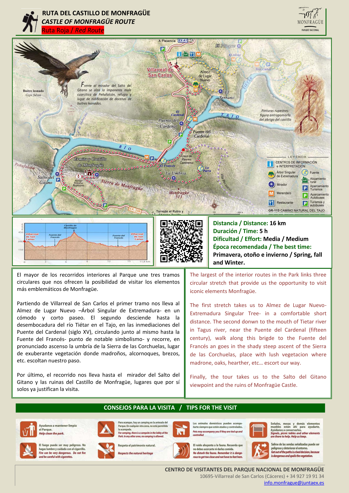
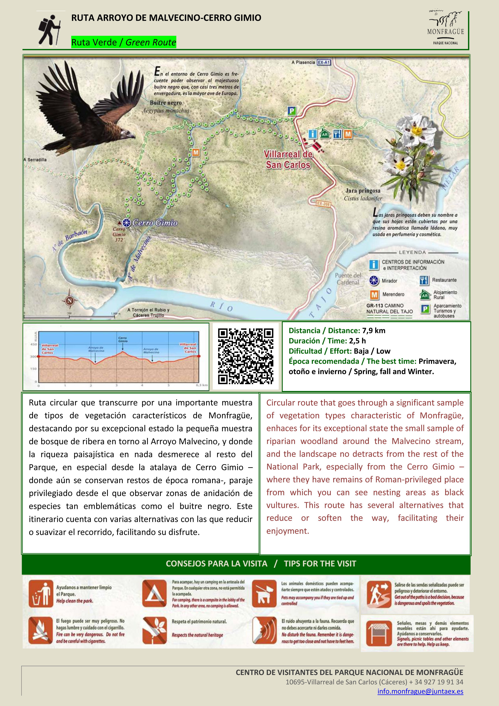
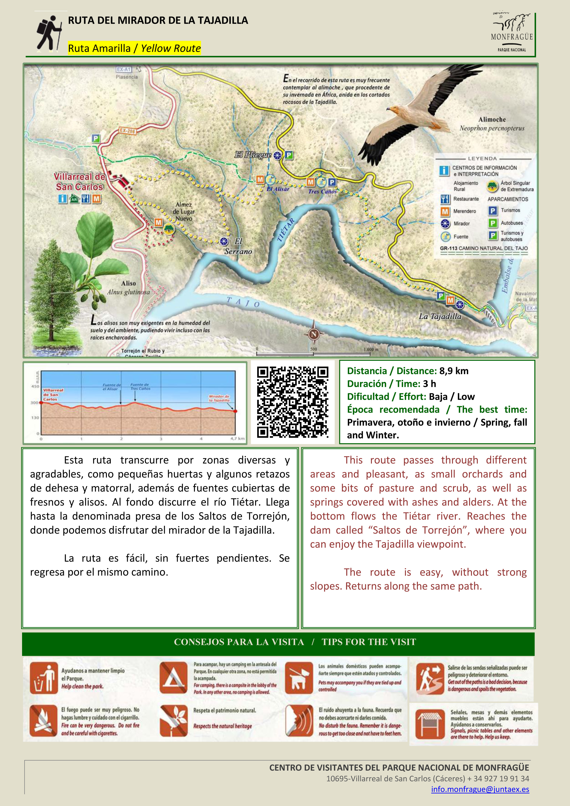

Rutas en Monfragüe
Descubre las emocionantes rutas que Monfragüe tiene para ofrecer y explora la belleza natural de la zona.
Ruta roja. Castillo de Monfragüe
El mayor de los recorridos interiores al Parque une tres tramos circulares que ofrecen la posibilidad de visitar los elementos más emblemáticos de Monfragüe.
Versión: español/inglés / Distancia: 16 km / Dificultad: media
Ruta verde. Arroyo de Malvecino-Cerro Gimio
Ruta circular que transcurre por una importante muestra de tipos de vegetación característicos de Monfragüe.
Versión: español/inglés / Distancia: 7,9 km / Dificultad: baja
Ruta amarilla. Mirador de la Tajadilla
Una ruta fácil que transcurre por zonas diversas y agradables, como pequeñas huertas y algunos retazos de dehesas y matorral...
Versión: español/inglés / Distancia: 8,9 km / Dificultad: baja
